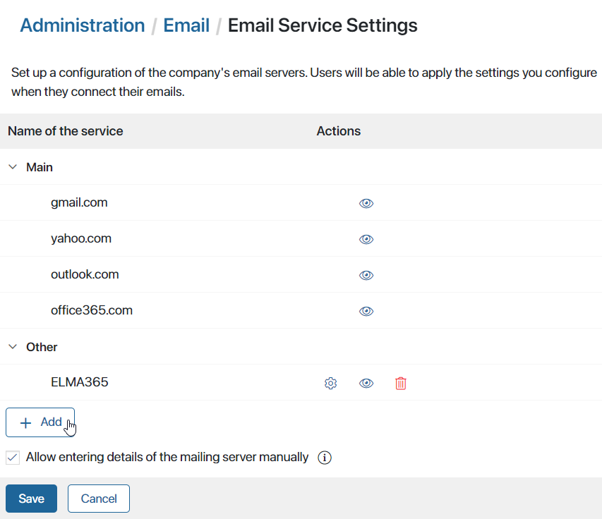
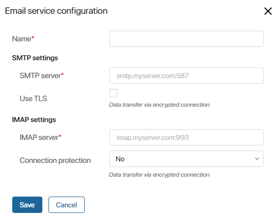

When connecting personal email accounts in the Email workspace, users select an email service from a list. Available options are specified by the system administrator in Administration > Email > Email Service Settings. Here you can:
- Add connection parameters for a corporate server.
- Hide email services not used by the company.
- Restrict users from entering connection parameters manually.
Add a corporate email server
To save users from having to manually specify the connection settings to the organization’s email server, you can save its parameters. The corporate server will appear among the options available to users when connecting an email inbox.
To do this:
- Go to Administration > Email > Email Service Settings. A page with a list of all available services will open. To add a new one, click the + Add button.

- In the window that opens, enter the required information in the fields.

- Name*. Set a name for the corporate email.
In the fields below, the SMTP and IMAP server names are formed as follows: the protocol name and the domain or email service provider separated with a period, then the port number after a colon. The connection security settings that the port number depends on are configured by the administrator who created the email.
You can look up server parameters in the settings of your current email client. For example, in the Mozilla Thunderbird application, go to Server Settings and Outgoing Server (SMTP). Alternatively, you can get the protocol connection parameters from the administrator who set up your corporate mail.
- SMTP settings:
- SMTP server*. Specify the protocol parameters of the outgoing mail server and the port you’re using. You can use three SMTP ports: 25, 465, and 587. Example:
smtp.myserver.com:465. - Use TLS. Check this box if the mail service transfers data via an encrypted connection.
- IMAP settings:
- IMAP server*. Specify the protocol parameters of the incoming mail server and the port you’re using. The commonly used IMAP ports are 143 and 993. Example:
imap.myserver.com:993. - Connection protection. Select the type of data encryption that the server uses. The options include No, STARTTLS, and TLS.
- Click the Save button.
After that, the name you set for your corporate email will be displayed in the list of services available for connection. The user can select the service you configured, enter their login and password, and start using their email in the BRIX interface.
To edit the connection parameters to the company’s email server, click the gear icon next to its name in the list. After that, the connected corporate email of users will continue to work. Reconnection is not required.
Delete a corporate server
Upon deletion, a server becomes unavailable to users and disappears from the Administration > Email > Email Service Settings page.
To delete a server from the list, click the icon next to its name. You will see a confirmation window listing users whose Email workspace will stop working after deletion. Click Delete and save the settings.
The connection to the server will be interrupted. When logging into the system or accessing the Email workspace, users will see an error notification. However, previously received or sent emails will still be displayed in the workspace.
Hide unused services
You can hide an email service from the list of available options for connecting a personal email account. For example, if your organization only allows connections to addresses with a corporate domain, you can hide standard services.
To do this, click the  icon next to the service name and save the settings.
icon next to the service name and save the settings.
Users will no longer be able to link an email using the hidden service. Previously connected inboxes will remain active.
To make the service available again, go to Administration > Email > Email Service Settings and click the icon.
Restrict manual entry of connection parameters
By default, users can connect an email service not listed in the available options. This is done by selecting the Other option and manually entering parameters for SMTP and IMAP servers.
You can restrict users from manually entering connection settings. To do this, on the Administration > Email > Email Service Settings page, uncheck the box in the field Allow entering details of the mailing server manually and click Save.
Other will no longer appear in the list of available options. For users who have already entered connection parameters manually, the email client will continue to work.